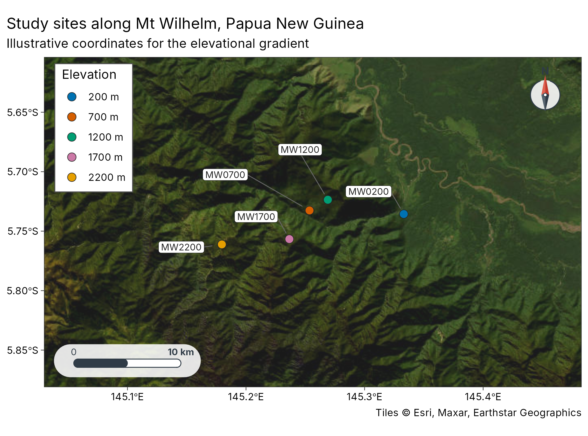
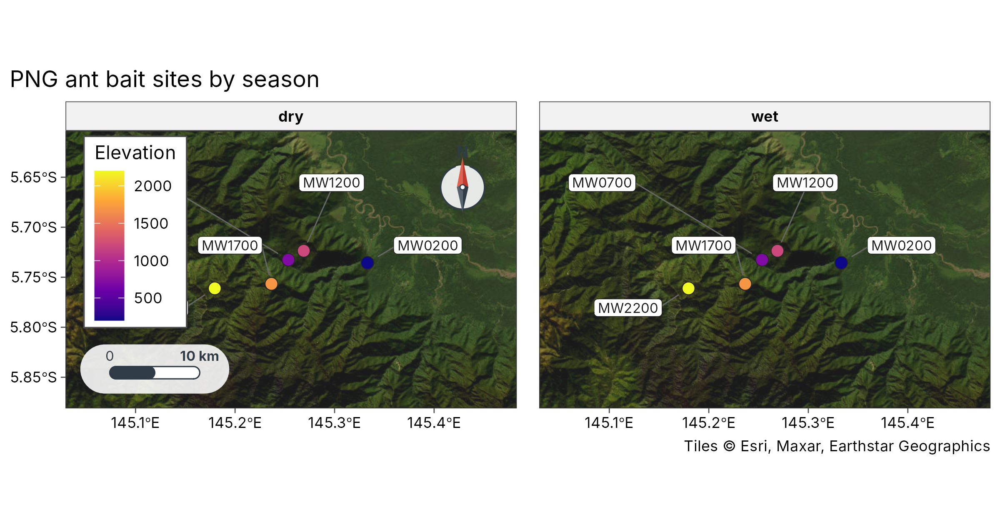
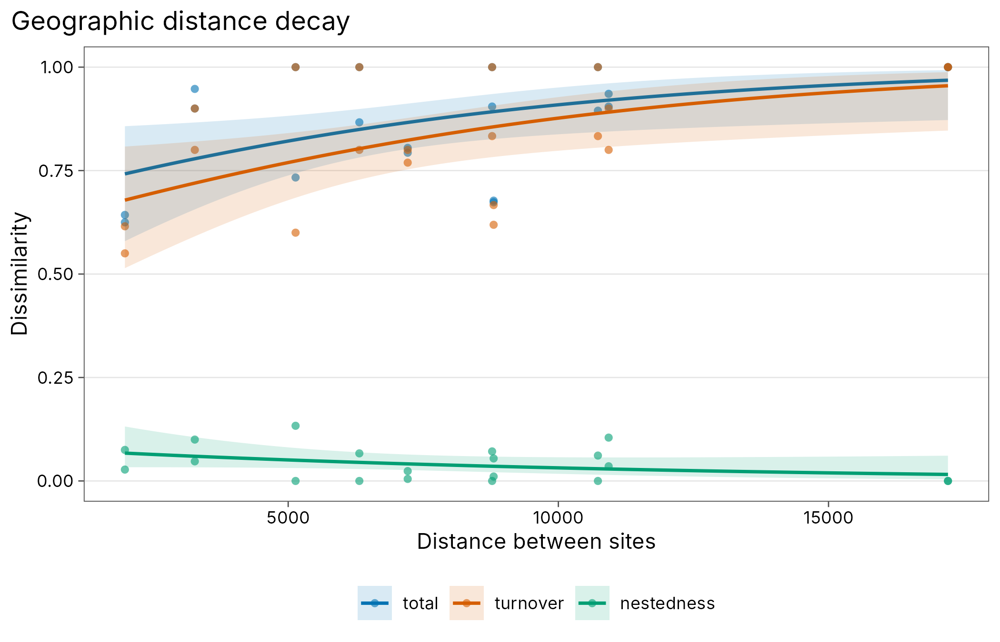
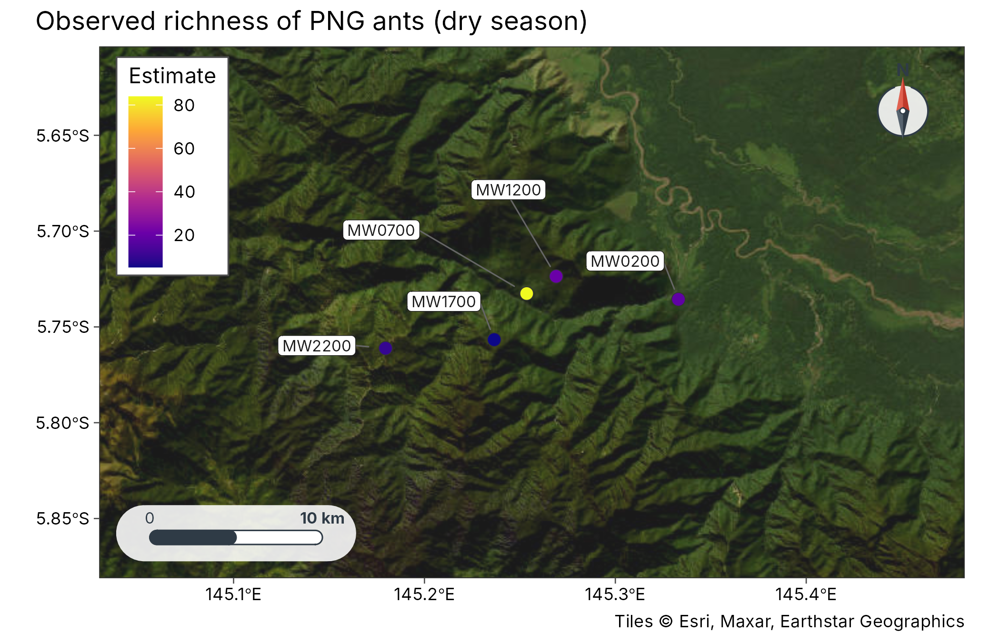
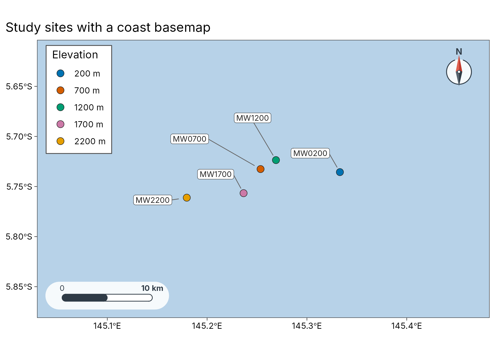
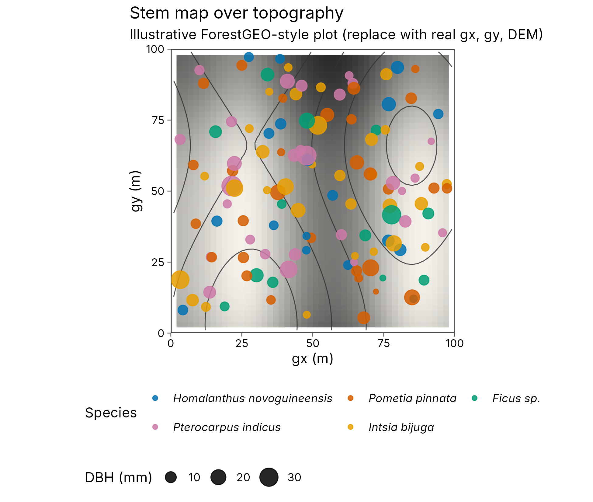
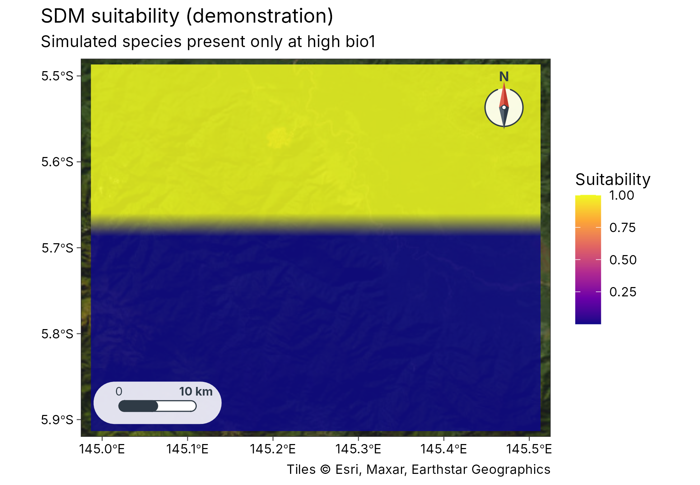
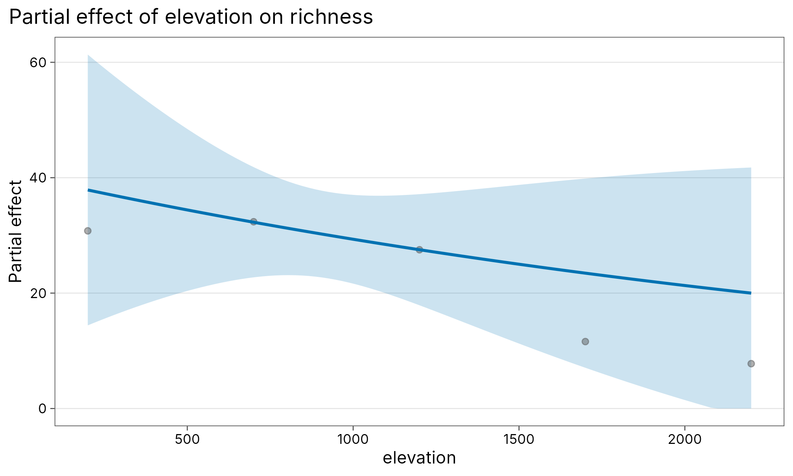
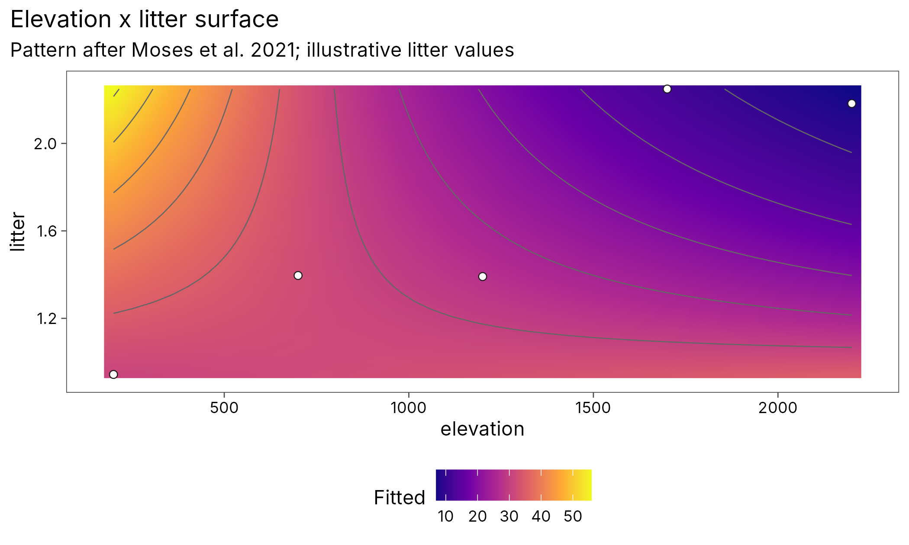

Geospatial diversity workflows
geospatial.Rmdtidymapr and tidydiversity share one tidy pipeline, in the same way
dplyr and ggplot2 do: tidydiversity estimates diversity, tidymapr puts
it on a map. This article covers study-site maps for papers, sites as
sf tables, rasters joined as columns, occurrence cleaning,
distances for tidydiversity::beta_decay(), Hill numbers on
maps, stem maps over topography, WorldClim/CHELSA bioclim (including
CMIP6), tidy SDMs (sdm_*) and Moran’s I for spatial
autocorrelation. Hand off to tmap or
leaflet with as_sf() /
as_spat_raster() when you want interactive maps; those stay
Suggests only. Diversity, stem and modelling verbs (div_*,
beta_*, stems_*, model_*,
plot_partial()) come from tidydiversity.
Study-site map (publication figure)
Papers almost always need a map of the sampling sites. The Mt Wilhelm
ant survey behind tidydiversity::png_ants comes with
published bait GPS positions ([png_ants_sites]; Mottl, Moses and Klimes
2023, doi:10.5281/zenodo.8191946),
and [geo_example_sites()] returns them as one point per elevation
band.
sites <- geo_example_sites("wilhelm")
# Keep the five elevations shared by both seasons in png_ants
sites <- sites[sites$elevation <= 2200, ]
sites$season <- "both"
plot_sites(
sites,
lon,
lat,
colour = elevation_band,
label = site,
scale_bar = TRUE,
north_arrow = TRUE
) +
ggplot2::labs(
title = "Study sites along Mt Wilhelm, Papua New Guinea",
subtitle = "Illustrative coordinates for the elevational gradient"
)
Join the same coordinates to community data when you need a map per season or taxon:
ants <- unique(png_ants[c("site", "elevation", "season")])
ants <- dplyr::left_join(ants, sites[c("site", "lon", "lat")], by = "site")
plot_sites(
ants,
lon,
lat,
colour = elevation,
facet = season,
label = site
) +
ggplot2::labs(title = "PNG ant bait sites by season")
Sites and rasters
sites <- geo_example_sites("wilhelm")
sites <- sites[sites$elevation <= 2200, ]
sf_sites <- geo_as_sf(sites, lon, lat, site = site)
sf_sites
#> Simple feature collection with 5 features and 6 fields
#> Geometry type: POINT
#> Dimension: XY
#> Bounding box: xmin: 145.1796 ymin: -5.76114 xmax: 145.333 ymax: -5.72361
#> Geodetic CRS: WGS 84
#> # A tibble: 5 × 7
#> site lon lat elevation elevation_band coordinate_note
#> * <chr> <dbl> <dbl> <int> <fct> <chr>
#> 1 MW0200 145. -5.74 200 200 m published bait GPS, doi:10.5281/z…
#> 2 MW0700 145. -5.73 700 700 m published bait GPS, doi:10.5281/z…
#> 3 MW1200 145. -5.72 1200 1200 m published bait GPS, doi:10.5281/z…
#> 4 MW1700 145. -5.76 1700 1700 m published bait GPS, doi:10.5281/z…
#> 5 MW2200 145. -5.76 2200 2200 m published bait GPS, doi:10.5281/z…
#> # ℹ 1 more variable: geometry <POINT [°]>
# Demo raster in place of CHELSA / WorldClim / SRTM
r <- terra::rast(
ncols = 40, nrows = 40,
xmin = 144.8, xmax = 145.5, ymin = -6.0, ymax = -5.5,
crs = "EPSG:4326"
)
terra::values(r) <- sites$elevation[1] +
800 * (terra::yFromCell(r, seq_len(terra::ncell(r))) + 6)
names(r) <- "elev_proxy"
sites_x <- geo_extract(sites, r, lon, lat)
sites_x
#> # A tibble: 5 × 7
#> site lon lat elevation elevation_band coordinate_note elev_proxy
#> <chr> <dbl> <dbl> <int> <fct> <chr> <dbl>
#> 1 MW0200 145. -5.74 200 200 m published bait GPS, do… 415
#> 2 MW0700 145. -5.73 700 700 m published bait GPS, do… 415
#> 3 MW1200 145. -5.72 1200 1200 m published bait GPS, do… 425
#> 4 MW1700 145. -5.76 1700 1700 m published bait GPS, do… 395.
#> 5 MW2200 145. -5.76 2200 2200 m published bait GPS, do… 395.Clean occurrence records
occ <- tibble::tibble(
species = c("Camponotus_sp1", "Camponotus_sp1", "Polyrhachis_sp2",
"Pheidole_sp3", "ghost"),
lon = c(145.23, 145.23, 145.12, 0, 12.58),
lat = c(-5.72, -5.72, -5.78, 0, 55.67)
)
geo_clean(occ, lon, lat, species = species, value = "flagged")[
c("species", "lon", "lat", ".zer", ".gbf", ".dpl", ".summary")
]
#> # A tibble: 5 × 7
#> species lon lat .zer .gbf .dpl .summary
#> <chr> <dbl> <dbl> <lgl> <lgl> <lgl> <lgl>
#> 1 Camponotus_sp1 145. -5.72 FALSE FALSE TRUE FALSE
#> 2 Camponotus_sp1 145. -5.72 FALSE FALSE TRUE TRUE
#> 3 Polyrhachis_sp2 145. -5.78 FALSE FALSE FALSE FALSE
#> 4 Pheidole_sp3 0 0 TRUE FALSE FALSE TRUE
#> 5 ghost 12.6 55.7 FALSE TRUE FALSE TRUEgeo_gbif() accepts a pre-downloaded GBIF table (or
downloads with rgbif when installed) and pipes into the
same cleaner.
Distance decay with tidydiversity
com <- dplyr::left_join(
png_ants,
sites[c("site", "lon", "lat")],
by = "site"
)
decay_geo <- geo_decay(com, lon, lat, .by = season, method = "haversine")
decay_elev <- geo_decay(
com, elevation = elevation, .by = season, method = "elevation"
)
head(decay_geo)
#> # A tibble: 6 × 7
#> season site_1 site_2 turnover nestedness total distance
#> <chr> <chr> <chr> <dbl> <dbl> <dbl> <dbl>
#> 1 dry MW0200 MW0700 0.667 0.0108 0.677 8802.
#> 2 dry MW0200 MW1200 0.769 0.0239 0.793 7212.
#> 3 dry MW0200 MW1700 0.8 0.105 0.905 10931.
#> 4 dry MW0200 MW2200 1 0 1 17211.
#> 5 dry MW0700 MW1200 0.615 0.0275 0.643 1978.
#> 6 dry MW0700 MW1700 0.8 0.1 0.9 3272.
Map Hill numbers
est <- div_estimate(png_ants, q = 0, nboot = 0, .by = season)
est <- dplyr::left_join(est, sites[c("site", "lon", "lat")], by = "site")
est_dry <- est[est$season == "dry", ]
plot_geo(est_dry, estimate, lon, lat, label = site) +
ggplot2::labs(title = "Observed richness of PNG ants (dry season)")
Spatial autocorrelation
set.seed(1)
g <- expand.grid(x = 1:8, y = 1:8)
g$richness <- g$x + g$y + 0.05 * stats::rnorm(nrow(g))
geo_moran(g, richness, lon = x, lat = y, nperm = 199, correlogram = TRUE)
#> # A tibble: 1 × 7
#> statistic expectation variance p.value n nperm method
#> <dbl> <dbl> <dbl> <dbl> <int> <dbl> <chr>
#> 1 0.314 -0.0159 0.000220 0.005 64 199 Moran's I (inverse-distanc…Basemaps
plot_sites() and plot_geo() take a
basemap argument. Use "coast" offline, online
tile names ("osm", "carto",
"carto_dark", "esri") when connected, or pass
a SpatRaster / file path. Tile fetch failures fall back to
the coast basemap with a message. Scale bar and north arrow stay on.
sites <- geo_example_sites("wilhelm")
sites <- sites[sites$elevation <= 2200, ]
plot_sites(
sites, lon, lat,
colour = elevation_band,
label = site,
basemap = "coast"
) +
ggplot2::labs(title = "Study sites with a coast basemap")
#> Warning: No Natural Earth land data available; install rnaturalearth.
#> ℹ Returning an empty land layer. Pass `coastline` or use a tile basemap.
Vector and raster analysis
Buffer sites, then summarise a raster inside each buffer (for example mean elevation). Crop and mask keep the analysis inside the study area.
sites_sf <- geo_as_sf(sites, lon, lat)
buf <- geo_buffer(sites_sf, dist = 5000)
r <- terra::rast(
ncols = 40, nrows = 40,
xmin = 144.8, xmax = 145.5, ymin = -6.0, ymax = -5.5,
crs = "EPSG:4326"
)
terra::values(r) <- sites$elevation[1] +
800 * (terra::yFromCell(r, seq_len(terra::ncell(r))) + 6)
names(r) <- "elev_proxy"
geo_raster_zonal(r, buf, fun = "mean")
#> # A tibble: 5 × 7
#> site lon lat elevation elevation_band coordinate_note elev_proxy
#> <chr> <dbl> <dbl> <int> <fct> <chr> <dbl>
#> 1 MW0200 145. -5.74 200 200 m published bait GPS, do… 411.
#> 2 MW0700 145. -5.73 700 700 m published bait GPS, do… 414.
#> 3 MW1200 145. -5.72 1200 1200 m published bait GPS, do… 423.
#> 4 MW1700 145. -5.76 1700 1700 m published bait GPS, do… 394.
#> 5 MW2200 145. -5.76 2200 2200 m published bait GPS, do… 393.
cropped <- geo_raster_crop(r, buf)
masked <- geo_raster_mask(r, buf)
c(ncell_full = terra::ncell(r), ncell_crop = terra::ncell(cropped))
#> ncell_full ncell_crop
#> 1600 140Bioclimatic variables (WorldClim and CHELSA)
Biodiversity models often need temperature and rainfall surfaces.
List the 19 bioclim variables with [geo_bioclim_vars()], then read or
download them with [geo_worldclim()] or [geo_chelsa()] (or the front
door [geo_bioclim()]). Pass path for local GeoTIFFs when
offline. Cite the data sources in any paper that uses them: WorldClim 2
(Fick and Hijmans 2017, CC BY 4.0) and CHELSA (Karger et al. 2017, CC BY
4.0).
geo_bioclim_vars()[c(1, 12), ]
#> # A tibble: 2 × 4
#> code name description unit
#> <chr> <chr> <chr> <chr>
#> 1 bio1 annual_mean_temperature Annual mean temperature deg_C
#> 2 bio12 annual_precipitation Annual precipitation mm
# Offline demo: a local stand-in for bio1 joined to sites
bio1 <- terra::rast(
ncols = 20, nrows = 20,
xmin = 144.8, xmax = 145.5, ymin = -6.0, ymax = -5.5,
crs = "EPSG:4326"
)
terra::values(bio1) <- 22
names(bio1) <- "bio1"
tmp <- tempfile(fileext = ".tif")
terra::writeRaster(bio1, tmp, overwrite = TRUE)
clim <- geo_worldclim(vars = "bio1", path = tmp, download = FALSE)
geo_extract(sites, clim, lon, lat)
#> # A tibble: 5 × 7
#> site lon lat elevation elevation_band coordinate_note bio1
#> <chr> <dbl> <dbl> <int> <fct> <chr> <dbl>
#> 1 MW0200 145. -5.74 200 200 m published bait GPS, doi:10.… 22
#> 2 MW0700 145. -5.73 700 700 m published bait GPS, doi:10.… 22
#> 3 MW1200 145. -5.72 1200 1200 m published bait GPS, doi:10.… 22
#> 4 MW1700 145. -5.76 1700 1700 m published bait GPS, doi:10.… 22
#> 5 MW2200 145. -5.76 2200 2200 m published bait GPS, doi:10.… 22Tree stems over topography (ForestGEO / Wanang)
Large forest dynamics plots map every stem in local metre coordinates
(gx, gy) over a DEM. [plot_topo()] draws stems
with contour lines and hillshade, coloured by species and sized by DBH.
The package does not yet ship real Wanang stem coordinates;
[geo_example_stems()] and [geo_example_dem()] give an illustrative 100 m
x 100 m plot in the ForestGEO column layout. Replace them with your
inventory for publication. ForestGEO / Wanang background:
Anderson-Teixeira et al. (2015), doi:10.1111/gcb.12712; ForestGEO https://forestgeo.si.edu/.
stems <- geo_example_stems()
dem <- geo_example_dem()
plot_topo(
stems,
colour = species,
size = dbh,
dem = dem,
boundary = c(0, 0, 100, 100)
) +
ggplot2::labs(
title = "Stem map over topography",
subtitle = "Illustrative ForestGEO-style plot (replace with real gx, gy, DEM)"
)
ForestGEO-style plots
Forest dynamics plots (ForestGEO / CTFS) map every stem in local metres and repeat the census about every five years (Condit 1998; Anderson-Teixeira et al. 2015). tidymapr handles the spatial steps and tidydiversity the census summaries:
-
tidydiversity::stems_as_trees()picks the main stem per tree. - [stems_quadrat()] assigns 20 m x 20 m quadrats from
gx/gy. -
tidydiversity::stems_abundance()andtidydiversity::stems_basal_area()summarise counts and basal area (pi/4 * dbh^2). -
tidydiversity::stems_size_class()bins DBH. -
tidydiversity::stems_demography()estimates mortality, recruitment and growth between two censuses. - [stems_habitat()] joins quadrat topography or habitat, [stems_neighbours()] counts neighbours within a radius and [stems_habitat_test()] runs the torus-translation habitat test.
-
tidydiversity::stems_as_community()feedstidydiversity::div_hill()and friends. - [plot_topo()] maps stems on hillshade and contours.
stems <- geo_example_stems()
stems_basal_area(stems, dbh_unit = "mm", .by = species)
#> # A tibble: 5 × 4
#> species basal_area basal_area_unit n_stem
#> <chr> <dbl> <chr> <int>
#> 1 Homalanthus_novoguineensis 799. mm2 13
#> 2 Pometia_pinnata 2004. mm2 23
#> 3 Ficus_sp 1357. mm2 8
#> 4 Pterocarpus_indicus 3459. mm2 22
#> 5 Intsia_bijuga 2215. mm2 20
cens <- geo_example_censuses()
stems_demography(cens$census1, cens$census2, time = 5, dbh_unit = "mm")
#> # A tibble: 1 × 12
#> N S D R mortality_rate recruitment_rate growth_rate growth
#> <int> <int> <int> <int> <dbl> <dbl> <dbl> <chr>
#> 1 80 74 6 8 0.0156 0.0205 0.460 absolute
#> # ℹ 4 more variables: n_growth <int>, time <dbl>, mindbh <dbl>, dbh_unit <chr>
com <- stems_as_community(stems_quadrat(stems))
div_hill(com, q = c(0, 1, 2))
#> # A tibble: 75 × 4
#> site q n diversity
#> <chr> <dbl> <dbl> <dbl>
#> 1 0_0 0 4 3
#> 2 0_0 1 4 2.83
#> 3 0_0 2 4 2.67
#> 4 0_20 0 2 2
#> 5 0_20 1 2 2
#> 6 0_20 2 2 2
#> 7 0_40 0 3 3
#> 8 0_40 1 3 3
#> 9 0_40 2 3 3
#> 10 0_60 0 1 1
#> # ℹ 65 more rowsEnvironmental distance decay
After joining bioclim columns with [geo_extract()] / [geo_bioclim()],
pass method = "environmental" to [geo_distance()] or
[geo_decay()] to get Euclidean (scaled) or Gower distances among sites.
The result feeds tidydiversity::beta_decay_model() the same
way as geographic or elevational distance.
sites <- unique(png_ants[c("site", "elevation", "season")])
sites$lon <- 145.0 + sites$elevation / 1e5
sites$lat <- -5.8 - sites$elevation / 2e5
sites$bio1 <- 25 - sites$elevation / 400
com <- dplyr::left_join(
dplyr::filter(png_ants, season == "wet"),
sites[c("site", "season", "lon", "lat", "bio1")],
by = c("site", "season")
)
decay <- geo_decay(com, lon, lat, method = "environmental", vars = "bio1")
head(decay)
#> # A tibble: 6 × 6
#> site_1 site_2 turnover nestedness total distance
#> <chr> <chr> <dbl> <dbl> <dbl> <dbl>
#> 1 MW0200 MW0700 0.619 0.0544 0.673 0.632
#> 2 MW0200 MW1200 0.8 0.00488 0.805 1.26
#> 3 MW0200 MW1700 0.9 0.0355 0.935 1.90
#> 4 MW0200 MW2200 1 0 1 2.53
#> 5 MW0700 MW1200 0.55 0.075 0.625 0.632
#> 6 MW0700 MW1700 0.9 0.0474 0.947 1.26Spatial eigenvectors, rarefaction and grain
[geo_mem()] builds dbMEM / PCNM eigenvectors from site coordinates. [geo_rarefy_spatial()] accumulates richness by distance from a seed sample. [geo_grain()] rebins sites into square cells of several sizes and recomputes Hill numbers, so MAUP / grain effects are visible. [geo_middomain()] adds a geometric mid-domain null for elevational richness.
Tidy species distribution models
[sdm_fit()], [sdm_predict()], [sdm_evaluate()] and [plot_sdm()]
provide a tidyverse-style SDM workflow. Engines: "glm",
"gam" (mgcv) and a native "maxnet"-like
presence-background model with linear and quadratic features (no Java
Maxent, no biomod2 or dismo). Predictors may be columns or a SpatRaster
from [geo_bioclim()].
set.seed(1)
grid <- expand.grid(
lon = seq(145, 145.5, length.out = 20),
lat = seq(-5.9, -5.5, length.out = 16)
)
grid$bio1 <- 15 + 12 * (grid$lat - min(grid$lat)) / diff(range(grid$lat))
pa <- grid
pa$present <- as.integer(pa$bio1 > 22)
fit <- sdm_fit(pa, predictors = "bio1", present = present, engine = "glm")
sdm_evaluate(fit)
#> # A tibble: 1 × 8
#> auc tss threshold sensitivity specificity n n_presence n_absence
#> <dbl> <dbl> <dbl> <dbl> <dbl> <int> <int> <int>
#> 1 1 1 1.000 1 1 320 140 180
plot_sdm(sdm_predict(fit, newdata = grid)) +
ggplot2::labs(
title = "SDM suitability (demonstration)",
subtitle = "Simulated species present only at high bio1"
)
Elevation, future climate and planning export
[geo_elevation()] downloads or reads an SRTM-style DEM (geodata /
elevatr, with offline path). [geo_chelsa()] accepts
scenario and year for CHELSA-CMIP6 future
layers (Karger et al. 2023; skip network with
download = FALSE on CRAN). [geo_as_features()] exports a
site-by-feature matrix for prioritizr; spectral / Google Earth Engine
helpers remain deferred.
Partial-effect and surface plots (Moses et al. 2021)
The Mt Wilhelm litter-ant analysis in Moses et al. (2021, doi:10.1111/btp.12914)
fitted Poisson and negative-binomial GLMs for richness and abundance
against elevation and litter depth, then used visreg
(visreg2d) for the interaction surface and hand-converted
the result to ggplot. tidydiversity replaces that jump with
tidydiversity::model_count(),
tidydiversity::plot_partial() and
tidydiversity::plot_surface() in one tidy workflow (no
visreg, plotmo or aods3).
ants <- png_ants |>
dplyr::group_by(site, elevation) |>
dplyr::summarise(richness = dplyr::n_distinct(species), .groups = "drop")
set.seed(1)
ants$litter <- 1 + ants$elevation / 2000 + stats::rnorm(nrow(ants), 0, 0.25)
fit <- model_count(
ants, richness ~ elevation * litter, family = "poisson"
)
plot_partial(fit, elevation, residuals = TRUE) +
ggplot2::labs(title = "Partial effect of elevation on richness")
plot_surface(fit, elevation, litter) +
ggplot2::labs(
title = "Elevation x litter surface",
subtitle = "Pattern after Moses et al. 2021; illustrative litter values"
)
GADM boundaries and GDAL-backed I/O
Administrative backdrops come from GADM via [geo_gadm()]. Level 0 is the
country outline, level 1 provinces, level 2 districts. Downloads are
cached under tools::R_user_dir("tidymapr", "cache")/gadm
and are not bundled in the package. GADM is free for
academic use; redistribution of the full database is restricted (license). Set
download = FALSE on CRAN or offline runners, or pass a
local GeoPackage with path.
# Online once (needs geodata + network):
png_prov <- geo_gadm("PNG", level = 1)
plot_sites(
geo_example_sites("wilhelm"), lon, lat,
colour = elevation_band, admin = png_prov, inset = "png"
)
# Clip an elevation raster to the country outline (GDAL warp via terra):
dem <- geo_raster_mask(dem, geo_gadm("PNG", level = 0))Raster and vector files are read and written through
GDAL (via terra and sf). Prefer [geo_read()] /
[geo_write()] (and the vector/raster twins) over calling
st_read, rast, gdal_translate, or
the retired rgdal package. Format is taken from the
file extension; see ?geo_read for the full table
(GeoTIFF/COG, NetCDF, ASCII grid, GeoPackage, shapefile, GeoJSON,
KML/KMZ, GML, FileGDB when available, CSV lon/lat occurrence
tables).
r <- geo_read("elevation.tif")
geo_write(geo_raster_project(r, "EPSG:32755"), "elev_utm55s.tif", overwrite = TRUE)
pts <- geo_read("sites.gpkg")
geo_write(as_sf(geo_example_sites("wilhelm")), "sites.gpkg", overwrite = TRUE)
occ <- geo_read("occurrences.csv") # lon/lat columns -> sfSave map figures from plot_sites() /
plot_geo() / plot_sdm() /
plot_topo() with [geo_save()] (or
tidydiversity::plot_save() for journal column sizes):
p <- plot_sites(
geo_example_sites("wilhelm"), lon, lat,
colour = elevation_band, inset = "png", basemap = "esri"
)
geo_save(p, "wilhelm_sites.png", width = 180, height = 140, units = "mm", dpi = 300)
geo_save(p, "wilhelm_sites.pdf")Legends, insets and hand-off to tmap / leaflet
plot_sites(), plot_geo() and
plot_sdm() draw ggplot maps with collision-aware placement
of the scale bar, north arrow, inside legend and optional overview inset
(the emptiest panel corner wins, so decorations do not sit on sites).
Legends support a title, inside/outside position, a frame, ordered keys,
and combined colour + size (for example a Hill number with elevation).
Set inset = "png" or inset = TRUE for a Papua
New Guinea / auto locator map with the main extent marked.
sites <- geo_example_sites("wilhelm")
plot_sites(
sites, lon, lat,
colour = elevation_band, size = elevation, label = site,
legend_title = "Elevation band",
legend_position = "auto",
legend_frame = TRUE,
inset = "png",
basemap = "esri"
)[as_sf()] and [as_spat_raster()] return plain sf /
terra objects with a CRS so the same sites hand off to
tmap (legends via tm_dots() /
tm_layout(), overview via tm_inset()) or
leaflet. Those packages stay Suggests only.
sites <- geo_example_sites("wilhelm")
pts <- as_sf(sites)
if (requireNamespace("tmap", quietly = TRUE)) {
# tmap v3/v4: col/size legends, compass, scale bar, inset overview
bb_png <- c(xmin = 140.5, ymin = -12, xmax = 156.5, ymax = -1)
tmap::tm_shape(pts) +
tmap::tm_dots(col = "elevation", size = 0.3) +
tmap::tm_layout(legend.outside = FALSE, legend.frame = TRUE) +
tmap::tm_compass(position = c("right", "top")) +
tmap::tm_scale_bar(position = c("left", "bottom")) +
tmap::tm_inset(tmap::tm_shape(pts) + tmap::tm_dots(),
position = c("left", "top"))
}
if (requireNamespace("leaflet", quietly = TRUE)) {
leaflet::leaflet(pts) |>
leaflet::addTiles() |>
leaflet::addCircleMarkers(popup = ~site)
}